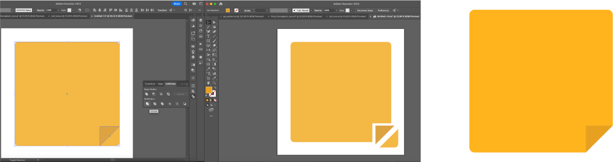

How To Make:
Simple Sticky Note in Adobe Illustrator

10. Now select both squares, go to the pathfinder tool, and click on the icon called divide to make each of the shapes you see become their own visual element.
11. Now that each shape is its own element, double click the bottom bright yellow corner of your big square that has the darker square separating it from the rest of its square and delete it.